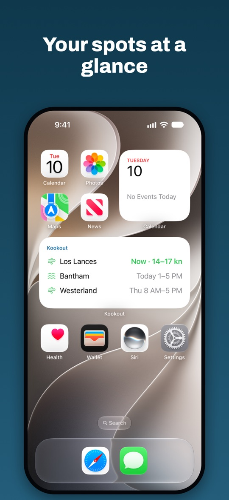
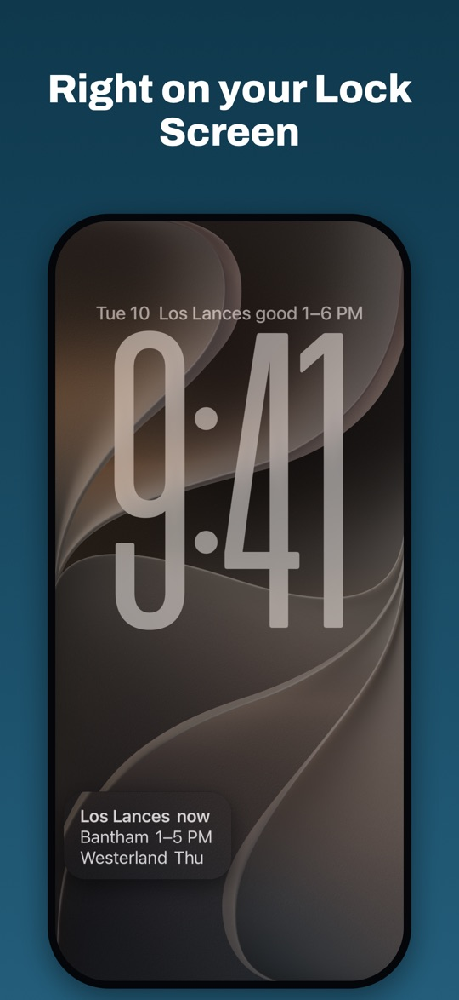

Hi, I'm Christian. My family and I wing foil in Drøbak, on the Oslofjord.
I love the forecast sites: the wind maps, the measurements, the webcams. What wore me down was opening them every morning only to find it wasn't worth it, and missing the good days when I was busy.
So I built Kookout to tap me on the shoulder. It knows what works at my spots and tells me when they're on. Then I open my usual sites and plan the session. It's new and it has rough edges. If something's off, write to me at hi@kookout.no. I read everything.
Christian
A tap on the shoulder. Then your usual sites.
Kookout's job is the nudge. When it says your spot is on, open the wind map, the webcam and the local chat you already trust, and plan the session from there. On the other days you can leave them closed.
Torkild works from southeast to southwest. Larkollen wants south to west-southwest.
Every spot is different. Tell Kookout what works where, and it judges every hour of the forecast against that. When the rules match, you hear a swoosh. When it's over, a gong.

Far-away spots count on days off
Mark a spot that takes a day trip as a weekend spot. It only counts on weekends and public holidays, and you hear about it days ahead.
Locals make the spots better
Spots are shared. Once three locals follow one, their votes set its wind directions and limits. Keep the community's rules or set your own.
Quiet at night
Nothing between 10 pm and 7 am. And the gong when it's over saves you a drive out for nothing.
Live wind before you leave
See what a station near the spot is measuring right now.

Put it on your Lock Screen.
This is where Kookout really works. You see that it's on every time you pick up your phone, before you'd even have thought to check.
Long-press the Lock Screen or the Home Screen, tap Customise or Edit, and add Kookout.
Kookout in 30 seconds
Gary loves his charts. He also has a job. Kai just waits for the nudge.
riders used Kookout last month, most of them friends and family. Between them they follow 26 spots.
"QUOTE FROM A TESTER" (first name)
It's new. Tell me what's wrong.
Something off at your spot, a rule that doesn't fit, an idea? Write to hi@kookout.no.
No iPhone? The forecast with the same rules works in your browser too. The app adds notifications, Home and Lock Screen widgets, and community spots that get better as locals vote, with Sign in with Apple to share your own.
Open the web version →